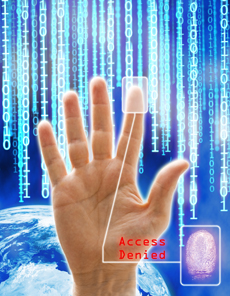
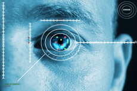

Um dos principais instrumentos que estão sendo utilizado hoje em dia para poder segregar o acesso de pessoas a lugares classificados com de acesso restrito é a Biometria.
A Biometria nada mais é do que o processo de se utilizar, de forma automatizada, as características físicas ou comportamentais de um indivíduo para efetuar o processo de determinação ou verificação de sua identidade. Depois de feita a coleta por dispositivos apropriados, as informações são comparadas com os registros arquivados previamente. Tendo êxito na comparação, é dada permissão ao indivíduo para alguma atividade.
A palavra biometria vem do grego "bios", cujo significado é vida e Métron, que representa a palavra medida. Dessa forma, o processo biométrico aplica as teorias matemáticas e estatísticas junto à Biologia. Aliado a isso teremos a tecnologia, que ajudará na identificação do indivíduo.
A biometria tem uma vantagem com relação à antiga forma de verificação de uma pessoa, pois antigamente o processo era feito de forma manual e a comparação era feita uma a uma. Devido ao processo de biometria ser automatizado e com a possibilidade da utilização de equipamentos tecnológicos, é possível fazer a análise e comparação de milhares de registros por segundo sem que haja a necessidade da intervenção humana.
Quando falamos no assunto biometria, logo nos lembramos de filmes em que ocorre a verificação da identidade de uma pessoa por meio da sua impressão digital. O ser humano possui outras características físicas únicas que podem ser utilizadas para o processo de comparação, como: a sua face, a sua íris, a sua voz, entre outros.
Os componentes biométricos que podem ser utilizados durante o processo de identificação se dividem em elementos "comportamentais" e elementos "físicos". Quando nos referimos aos elementos "físicos" utilizados na Biometria temos de entender que o processo se baseia em medidas feitas diretamente em partes do corpo humano, ou seja, elementos que se consiga ver ou tocar.
Já quando nos referimos aos elementos "comportamentais", estamos nos referindo aos componentes que utilizam comparações feitas a partir de uma ação do indivíduo e são, portanto, medidas não tangíveis, e por isso consideradas medidas indiretas do ser humano.
Funcionamento da verificação biométrica
Em um primeiro momento, o usuário precisa se registrar no sistema através de um meio físico, que permita que seja extraído dele os elementos físicos ou comportamentais que poderão ser mensuráveis. Esses elementos serão armazenados de forma íntegra ou traduzida em um formato especial chamado planilha biométrica. Quando for necessário que esse usuário tenha acesso a algum lugar ou alguma aplicação, seu elemento biométrico é capturado novamente e depois é confrontado com as características que se encontram armazenadas. Dessa forma, para que todo esse processo possa ser realizado, é necessário no mínimo a existência de três componentes básicos:
- Um tipo de sensor qualquer que terá a função de detectar a característica biométrica que estará sendo utilizada para o processo de identificação.
- Um dispositivo (computador) que será responsável por ler e armazenar as informações coletadas pelo sensor.
- Por último, será necessária a existência de um software (algoritmo matemático), que terá a função de analisar as características biométricas fornecidas pelo sensor e fazer as comparações necessárias para validar ou não a identificação do indivíduo com um template (modelo) que se encontra armazenado. Esse template (modelo) é uma representação pequena da característica biométrica do indivíduo e possui as informações necessárias para fazer a sua identificação. É utilizado para economizar espaço de armazenamento nos dispositivos, bem como para diminuir a quantidade de processamento.
Nível de precisão
Para determinar se um sistema é preciso ou não, a maioria dos fabricantes da tecnologia biométrica utiliza taxas. Essas taxas podem ser classificadas em dois tipos:
- TFA – Taxa de falsa aceitação: taxa que mede o número de falhas do processo de autenticação, ou seja, verifica a porcentagem de vezes que o sistema possibilitou que uma pessoa diferente da originalmente cadastrada fosse validada pelo sistema como sendo verdadeira, ao invés do sistema bloquear.
- TFR – Taxa de falsa rejeição: essa taxa mede o número de falhas do processo de autenticação pela rejeição de um usuário legítimo, ou seja, o sistema impediu, devido à existência de algum erro, que uma pessoa válida tivesse o seu acesso liberado.
Tipos de biometria
As técnicas de análise de impressões digitais
A identificação pela digital trata-se da mais antiga, popular e conhecida forma de se fazer o processo de identificação de uma pessoa. Os sistemas biométricos baseados na digital se utilizam da impressão digital do dedo do usuário para autenticá-lo e servir também como se fosse uma senha.
Os tipos de sensores utilizados para os equipamentos são fáceis de encontrar e muito baratos de serem instalados, além de não depender de uma infraestrutura tecnológica grande ou cara para a sua implementação dentro das empresas, uma vez que esse sistema só precisa comparar as impressões digitais que estão armazenadas na forma de template (modelo) dentro das aplicações biométricas.
Os sistemas biométricos baseados na digital fazem a análise de pequenas marcas que existem na imagem do dedo, que são as terminações e bifurcações dos sulcos, chamadas de minúcias.
Tecnologia de reconhecimento facial
O rosto humano contém uma grande quantidade de características únicas utilizadas pelos equipamentos de reconhecimento. Esse tipo de tecnologia biométrica apresenta como vantagem a possibilidade de que a identificação da pessoa possa ser feita sem que haja a necessidade de qualquer contato físico com o indivíduo, ou seja, com um grau de intrusividade (agreção/incomodação ao usuário) extremamente baixo ou nulo, porém apresenta como desvantagem o próprio processo de identificação, que é extremamente complexo devido a variáveis como a mudança que o rosto pode sofrer durante o decorrer do tempo.
No processo de reconhecimento do rosto de uma pessoa, os equipamentos biométricos mapeiam basicamente a geometria e as proporções entre os elementos existentes no rosto da pessoa, como, por exemplo, a distância entre os olhos, a distância entre a boca, nariz e os olhos.
Tecnologia baseada na geometria da mão
Esse sistema utiliza um tipo de scanner que possui guias parecidas com pinos, onde os dedos da pessoa que deverá ser autenticada devem ser encaixados entre os dedos. É um tipo de sistema tridimensional que registra as proporções entre os dedos, a largura e a área da mão, ou seja, o seu tamanho. Possui como vantagem a necessidade de requerer pouco espaço para o armazenamento do template (modelo) biométrico, além de ter baixo custo de implementação e esforço por parte do indivíduo que deverá ser autenticado. Suas principais desvantagens estão relacionadas ao fato de necessitar que a pessoa que vai fazer o processo de autenticação tenha que encaixar corretamente a mão no equipamento de captura, bem como a presença de anéis por parte das mulheres poderá trazer uma série de transtornos
Tecnologia da dinâmica da assinatura
Essa tecnologia faz uma análise da maneira que o indivíduo tem para fazer a sua assinatura, sendo que esse tipo de técnica não analisa simplesmente a forma das letras, pois isso poderia ser facilmente falsificado. Dessa forma, são analisadas as características de pressão da caneta e o seu ângulo de assinatura. Também podem ser verificados o número de vezes que a caneta é tirada do papel, bem como sua aceleração durante o processo de assinatura.
Tecnologia do timbre de voz
Trata-se de uma tecnologia que busca encontrar no som que é emitido pelo indivíduo para fazer o processo de autenticação. Existem sistemas que fazem essa análise baseada em textos fixos, porém, para melhorar a segurança, existem sistemas que se utilizam de textos mostrados randomicamente na tela para que sejam pronunciados por quem está sendo autenticado. Esse tipo de sistema apresenta desvantagens específicas relacionadas ao ambiente onde a captura do template biométrico está sendo feita, devido ao fato de que a existência de ruídos externos podem interferir no processo da análise tanto da captura como na hora da verificação; além disso, as enfermidades humanas como gripe e rouquidão alteram o som emitido pelo indivíduo que está sendo validado.
Tecnologia baseada na íris

Muitas pessoas, quando comentamos a respeito dessa tecnologia, confundem a íris com a retina. Dessa forma, antes de explicá-la, cabe informar que a íris é um anel colorido que envolve a pupila dos olhos, enquanto a retina é uma camada de vasos sanguíneos no fundo do olho individual para cada pessoa.
O processo de reconhecimento da íris necessita de uma câmera que será responsável por obter a imagem para o processo de comparação. Esse tipo de tecnologia tem como vantagem o fato de não ser incômodo para o usuário, ou seja, não é intrusivo. A tecnologia baseada na íris é bastante confiável devido à sua unicidade (a íris de cada indivíduo é diferente), além do fato de que ela permanece estável com o passar dos anos.
Essa tecnologia tem como vantagem a rapidez com que a autenticação é feita, além de que o template biométrico gerado após a captura possui um tamanho pequeno, cerca de 512 bytes. Porém apresenta como desvantagem erros que podem acontecer durante o processo de captura, podendo fazer com que a imagem que será analisada não tenha boa qualidade como, por exemplo, a distância do olho até o equipamento de coleta, movimentação dos olhos durante o processo de captura, reflexos no olho por luzes durante o momento da captura do template. A presença de muitas pessoas em movimento em locais de captura pode interferir no momento em que ela está sendo feita. Doenças dos olhos como catarata, conjuntivite, tremor nos olhos ou alergias podem prejudicar a identificação
Reconhecimento pela retina
Esse sistema é o que possui como característica ter a maior garantia de singularidade que um indivíduo pode apresentar, ou seja, é considerado o mais preciso, porém apresenta como desvantagem o processo de captura, pois faz-se necessário que esse processo seja feito com total colaboração do indivíduo que está sendo autenticado uma vez que é necessário que a pessoa olhe fixamente para um ponto de luz de infravermelho até que a câmera focalize os padrões de veias e os capture. Também apresenta como dificultador a necessidade de que a pessoa fique muito próxima ao sensor que irá capturar o template, acabando por incomodar o indivíduo a ser autenticado.
As biometrias do tipo íris, retina, impressão digital, geometria da mão, reconhecimento facial são classificadas como do tipo físico, enquanto as biometrias dinâmica da assinatura, reconhecimento de voz classificam-se em comportamental.
Quem é da minha geração provavelmente deve se lembrar do filme Star Trek (Jornada nas Estrelas), em que existia as personagens Capitão Kirk e o Sr Spok, que navegavam pelas galáxias na nave Enterprise. Nesse seriado havia comunicadores que permitiam às pessoas que estavam naquela nave falar com as pessoas aqui na Terra, além de poder ver a imagem em movimento do ouvinte. Para nós, crianças, era o máximo, e também acreditávamos que isso nunca iria ocorrer. Hoje basta verificar que até mesmo um simples celular permite uma chamada de vídeo entre dois celulares que podem estar em lugares opostos no mundo. Por que falei tudo isso? Apenas para introduzir o assunto sobre as novas tecnologias de biometria que estão em estudo. Algumas ficaram apenas nos estudos devido às suas limitações tecnológicas, bem como à dificuldade da coleta do template biométrico, porém outras, em poucos anos, poderão ser implementadas.
Tecnologia baseada no odor do indivíduo
Esse tipo de tecnologia prevê a utilização de um sensor eletrônico extremamente sensível que terá a capacidade de imitar o sentido do olfato humano e, dessa forma, detectar as partículas de odor liberadas por cada indivíduo.
Tecnologia baseada na arquitetura da orelha
Este tipo de tecnologia tem características parecidas com a do que é utilizado pela identificação pela face. Tem como vantagem a baixa intrusividade ao indivíduo, porém é mais suscetível a fraudes em razão da possibilidade de reprodução do membro.
Tecnologia baseada no DNA
A utilização do DNA para identificação é completamente segura, tanto que é o tipo de técnica utilizada pelas autoridades policiais para investigação de cadáveres e comprovação de paternidade. Porém esses tipos de tecnologia têm um inconveniente que está relacionado a alto grau de intrusividade ("incomodar as pessoas durante a coleta"), além da lentidão para o processo de análise e decifragem.
Tecnologia baseada nas ondas cerebrais
Baseia-se na medição das ondas eletromagnéticas que são emitidas pelo cérebro humano. Porém fatores comuns aos nossos usuários no seu dia a dia, como estresse, depressão, angustias, poderão alterar esses estados mentais, deixando a pessoa "desconfigurada" , além de que as características individuais do cérebro são as mais complexas e diversas possíveis.
Qual a melhor tecnologia a ser utilizada?
Para a escolha da melhor solução de biometria, fatores como tipo de usuário, necessidade de precisão, velocidade do processo de autenticação, custo dos equipamentos envolvidos no processo, aceitabilidade das pessoas, nível de intrusão, bem como necessidade de colaboração para a coleta da característica biométrica deverão ser considerados.